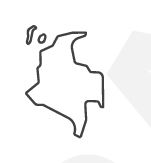

Análisis y Desarrollo de Software — SENA
Programa tecnólogo · Centro de Gestión Administrativa y Fortalecimiento Empresarial · Regional Boyacá
Misión
Razón de ser de la entidad y del programa de formación
Misión institucional
El Servicio Nacional de Aprendizaje está encargado de cumplir la función que le corresponde al Estado de invertir en el desarrollo social y técnico de los trabajadores colombianos, ofreciendo y ejecutando la formación profesional integral para la incorporación y el desarrollo de las personas en actividades productivas que contribuyan al desarrollo social, económico y tecnológico del país.
Misión del programa ADSO
Formar tecnólogos capaces de analizar, diseñar, construir y desplegar soluciones de software que respondan a las necesidades reales del sector productivo, aplicando metodologías de desarrollo, buenas prácticas de ingeniería y criterios de calidad, con sentido ético y responsabilidad social.
Visión
Horizonte de la entidad y del programa
Visión institucional
El SENA se consolidará como una entidad de clase mundial en formación profesional integral y en el uso y apropiación de tecnología e innovación al servicio de personas y empresas, aportando de forma decisiva al desarrollo y a la competitividad de Colombia.
Visión del programa ADSO
Ser el programa de referencia regional en la formación de talento para el desarrollo de software, reconocido por la pertinencia de sus proyectos formativos, la calidad técnica de sus egresados y su articulación con el tejido empresarial de Boyacá.
 Ubicación
Ubicación
Sede donde se ejecuta la formación presencial y cobertura de la entidad
Sede de formación
SENA CEGAFE — ITEDRIS
Calle 5-61-13 norte, Tunja
Regional Boyacá

Cobertura nacional
El SENA hace presencia en los 32 departamentos del país a través de sus centros de formación y su oferta virtual.
Formación virtual
La oferta complementaria y el acompañamiento se apoyan en el LMS institucional y en las sesiones en línea.
| Espacio | Tipo | Capacidad | Uso |
|---|---|---|---|
| Sala de sistemas 1 | Presencial | 30 | Ficha 3293836 — ADSO |
| Sala de sistemas 2 | Presencial | 25 | Programas afines |
| Laboratorio de redes | Presencial | 20 | Uso compartido |
| Aula virtual | Virtual | Sin límite | Sesiones en línea y contenidos |
 Servicios
Servicios
Oferta institucional disponible para aprendices, egresados y empresas
Formación titulada
Programas técnicos, tecnólogos y de especialización con certificación oficial.
Formación complementaria
Cursos cortos presenciales y virtuales para actualización y profundización.
Certificación de competencias
Reconocimiento formal de saberes adquiridos en la experiencia laboral.

Agencia Pública de Empleo
Intermediación laboral gratuita entre aprendices, egresados y empresas.
Fondo Emprender
Financiación de planes de negocio formulados por aprendices y egresados.

Biblioteca SENA
Acceso a bases de datos, libros digitales y recursos de consulta especializados.
Habilidades
Capacidades que desarrolla el aprendiz durante la etapa lectiva
Técnicas
Programación, estructuras de datos, bases de datos, diseño de interfaces, pruebas y despliegue.
Analíticas
Levantamiento de requisitos, modelado de procesos y datos, y validación de artefactos.
Comunicativas
Argumentación oral y escrita, documentación técnica y comunicación en inglés técnico.

Sociales
Trabajo colaborativo, resolución de conflictos, ética profesional y cultura de paz.
Competencias
Competencias del programa y su relación con las fases del proyecto formativo
| Competencia | Fase | Resultados asociados | Naturaleza |
|---|---|---|---|
| Analizar los requisitos del cliente | Análisis | RA-01 a RA-04 | Específica |
| Estructurar el modelo de datos | Planeación | RA-10, RA-11 | Específica |
| Elaborar los artefactos de diseño | Planeación | RA-12 | Específica |
| Construir y desplegar el software | Construcción | RA-41, RA-42, RA-49 | Específica |
| Verificar la calidad del software | Evaluación | RA-54, RA-60 | Específica |
| Comunicarse en inglés técnico | Transversal | RA-09, RA-13, RA-26 | Transversal |
| Aplicar razonamiento matemático y físico | Transversal | RA-17 a RA-25 | Transversal |
| Promover cultura de paz y ética | Transversal | RA-55 a RA-58 | Transversal |
| Gestionar el emprendimiento | Transversal | RA-71 a RA-74 | Transversal |
Coordinadores de Área
Seis coordinaciones del centro, con sus áreas de responsabilidad y contacto
Procedencia de los datos: las cuatro secciones que siguen —coordinadores, directorio de oficina, oferta educativa 2026 e información institucional— se transcribieron a partir de un conjunto de 29 imágenes (Imagenes_coordinadores_de_area.rar): tarjetas de coordinadores, tablas del directorio institucional y piezas gráficas de la campaña «II Oferta Presencial y a Distancia 2026». No proceden de un sistema institucional, así que conviene contrastarlos antes de usarlos como referencia oficial.
Seis tarjetas informativas, cada una con nombre, cargo, áreas de responsabilidad y correo de contacto.
Gustavo Enrique Cely Camargo
- Contratación
- Tesorería
- Presupuesto
- Infraestructura
Marco Esteban Camacho Perilla
- Novedades de alumnos
- Comités de evaluación y seguimiento de aprendices
Carlos Arturo Valdiri Rojas
- Promoción y divulgación de la oferta educativa
- Control y actualización de información académica en los sistemas institucionales
- Expedición de certificados y títulos
Martha Yolanda Barón Fernández
- Contabilidad
- Finanzas
- Bilingüismo
- Complementaria Virtual
María Clemencia Pérez Zárate
- Artesanías
- Gastronomía
- Turismo
Julián Alfonso Valero Bustos
- Desarrollo de Software
- Contenidos Digitales
- Redes e Infraestructura
- Complementaria CampeSena
- Complementaria Full Popular
- Complementaria para atención Población Vulnerable
Observación: el directorio general de oficina (sección 2) asigna la coordinación de algunas de estas mismas áreas a otras personas —por ejemplo, Jhon Fernando Méndez Aldana aparece como Coordinador de Administración Educativa y Diego Parra Londoño como Coordinador Académico del área Turismo, Gastronomía y Campesena. Ambas fuentes se transcriben tal como aparecen en las imágenes; la diferencia puede deberse a que corresponden a momentos distintos de actualización.
 Directorio de Oficina
Directorio de Oficina
Planta y contratistas por dependencia. Cada bloque se despliega al tocarlo
Tabla institucional completa por dependencia: nombre, cargo, correo y tipo de vinculación. Haga clic en cada dependencia para expandirla.
Coordinación Administración Educativa 7 personas
| Nombre | Cargo | Correo | Vinculación |
|---|---|---|---|
| Jhon Fernando Méndez Aldana | Coordinador Administración Educativa | jfmendeza@sena.edu.co | Carrera Administrativa |
| Claudia Natalia Gómez Mora | Apoyo Administrativo | cngomezm@sena.edu.co | Contratista |
| Blanca Myriam Díaz Tibaduiza | Proceso de Certificación | bmdiaz@sena.edu.co | Contratista |
| Derly Biviana Hernández Hernández | Agente GAE | dhernandezh@sena.edu.co | Contratista |
| Nancy Milena González Sarmiento | Profesional de Ingreso | ngonzalezs@sena.edu.co | Contratista |
| Yuber Alexander Matta Ojeda | Apoyo de Programación | yamatta@sena.edu.co | Contratista |
| Luz Emy Suárez Molina | Apoyo de Programación | lesuarezm@sena.edu.co | Contratista |
Coordinación Académica · Turismo, Gastronomía y Campesena 3 personas
| Nombre | Cargo | Correo | Vinculación |
|---|---|---|---|
| Diego Parra Londoño | Coordinador Académico | dparral@sena.edu.co | Carrera Administrativa |
| Angela Patricia Pinto López | Apoyo Coordinación Académica | apintol@sena.edu.co | Contratista |
| Natalia Álvarez | — | nlalvarez@sena.edu.co | Contratista |
Coordinación Académica · Contable, Sistemas, Redes, Bancaria y Articulación con Educación Media 4 personas
| Nombre | Cargo | Correo | Vinculación |
|---|---|---|---|
| Martha Yolanda Barón Fernández | Coordinadora Académica | mybaron@sena.edu.co | Carrera Administrativa |
| Orlando Pérez Walteros | Profesional de Apoyo a la Gestión – Articulación con la Educación Media | operezw@sena.edu.co | Contratista |
| Yudy Patricia Sánchez Rodríguez | Apoyo administrativo a la supervisión de contrato | ypsanchez@sena.edu.co | Contratista |
| Diana Lorena Gómez Moreno | Apoyo Coordinación Académica | dlgomezm@sena.edu.co | Contratista |
Coordinación Académica · Empresarial, Comercial y Salud 2 personas
| Nombre | Cargo | Correo | Vinculación |
|---|---|---|---|
| Norberto Parra | Coordinador Académico | rrodriguezpa@sena.edu.co | Carrera Administrativa |
| Yulieth Yeraldin Rodríguez Hortúa | Apoyo Coordinación | yyrodriguezh@sena.edu.co | Contratista |
Coordinación Académica · Administrativa, Documental y Transversales 3 personas
| Nombre | Cargo | Correo | Vinculación |
|---|---|---|---|
| Nidia Maritza Mora Valbuena | Coordinadora Académica | nmora@sena.edu.co | Carrera Administrativa |
| César Andrés Fajardo Téllez | Apoyo Coordinación Académica | cafardot@sena.edu.co | Contratista |
| Lucía Consuelo Wanumen Camargo | Apoyo administrativo a la supervisión de contrato | lwanumen@sena.edu.co | Contratista |
Bienestar al Aprendiz 15 personas
| Nombre | Cargo | Correo | Vinculación |
|---|---|---|---|
| María Cristina López Niño | Líder Bienestar al Aprendiz | mcrlopez@sena.edu.co | Carrera Administrativa |
| Yodi Carolina Farías Limas | Apoyos Administrativos | ycfarias@sena.edu.co | Contratista |
| Capellán Milton Alfredo Rojas Lache | Apoyo Consejería | mrojasl@sena.edu.co | Contratista |
| Ana María Buitrago Vargas | Psicóloga | ambuitrago@sena.edu.co | Contratista |
| Lucy Alejandra Herrera Orjuela | Psicóloga | laherrera@sena.edu.co | Contratista |
| Jenny Carolina Roa Roa | Psicóloga | jcroa@sena.edu.co | Contratista |
| César Fernando Álvarez Vallejo | Psicólogo | dfalvarez@sena.edu.co | Contratista |
| Claudia Patricia Mesa Chaparro | Trabajadora Social | cpmesac@sena.edu.co | Contratista |
| Yohanna Carolina Roberto | Auxiliar de Enfermería | ycroberto@sena.edu.co | Contratista |
| Gloria Cristina Urrutia Zorro | Auxiliar de Enfermería | gurrutia@sena.edu.co | Contratista |
| Silvia Leonor Rubio | Apoyo Socioeconómico Aprendiz | slrubio@sena.edu.co | Contratista |
| Clara Nelly Alfonso Piña | Instructora Teatro | cnalfonso@sena.edu.co | Contratista |
| Blanca Lucila Fagua Martínez | Instructora Música | bfagua@sena.edu.co | Contratista |
| Nelly Yolanda Buitrago Celis | Instructora Danzas | nybuitrago@sena.edu.co | Contratista |
| Luis Carlos Moreno Maldonado | Instructor Deportes | lucmorem@sena.edu.co | Contratista |
| Mayerly Katherine Rojas León | Instructora Teatro | mkrojas@sena.edu.co | Contratista |
Biblioteca SENA – CEGAFE 4 personas
| Nombre | Cargo | Correo | Vinculación |
|---|---|---|---|
| Nancy Fabiola Bermúdez Bernal | Apoyo Biblioteca Sede Santa Clara | nfbermudezb@sena.edu.co | Contratista |
| Germán Francisco Infante Moreno | Profesional en Bibliotecología CEGAFE | ginfante@sena.edu.co | Contratista |
| Aura María Sarmiento Téllez | Apoyo Biblioteca Sede Santa Clara | asarmiento@sena.edu.co | Contratista |
| Erika Alejandra Molina López | Apoyo Biblioteca CEGAFE | eamolina@sena.edu.co | Contratista |
Relaciones Corporativas 2 personas
| Nombre | Cargo | Correo | Vinculación |
|---|---|---|---|
| Susana Marcela Burgos Ojeda | Líder Contratos de Aprendizaje / Relaciones Corporativas | sburgos@sena.edu.co | Contratista |
| Martha Isabel Barrera Medina | Apoyo Relaciones Corporativas | mibarrera@sena.edu.co | Contratista |
Mesa Sectorial 2 personas
| Nombre | Cargo | Correo | Vinculación |
|---|---|---|---|
| Jessica Millán Peñuela | Metodóloga de Normalización, Gestión de Instancias de Concertación y Competencias Laborales | jmillanp@sena.edu.co | Carrera Administrativa |
| Ana María Ramos Ulloa | Facilitador del proceso de gestión de Instancias de Concertación y Competencias Laborales | amramosu@sena.edu.co | Contratista |
Evaluación y Certificación de Competencias Laborales 2 personas
| Nombre | Cargo | Correo | Vinculación |
|---|---|---|---|
| Blanca Jacqueline Sepúlveda Figueroa | Dinamizadora Evaluación y Certificación de Competencias Laborales | bsepulveda@sena.edu.co | Contratista |
| María Fernanda Gómez Rincón | Apoyo Administrativo Evaluación y Certificación de Competencias | mfgomezr@sena.edu.co | Contratista |
Autoevaluación y Registro Calificado 1 persona
| Nombre | Cargo | Correo | Vinculación |
|---|---|---|---|
| Jenny Milena Quiroga Martínez | Profesional Registro Calificado | jmquiroga@sena.edu.co | Carrera Administrativa |
Oficina de Sistemas – Mi Ayuda TIC 5 personas
| Nombre | Cargo | Correo | Vinculación |
|---|---|---|---|
| Yeisson Fabián Borda Morales | Dinamizador TIC | yfborda@sena.edu.co | Contratista |
| Cristian Fabián Rubio Romero | Analista TIC | crubior@sena.edu.co | Contratista |
| Herson Mauricio Ochoa Ochoa | Analista TIC | hochoao@sena.edu.co | Contratista |
| Juan Manuel Hernández Neira | Analista TIC | jmhernandezn@sena.edu.co | Contratista |
| Diana Marcela Pirachicán Roberto | Analista TIC | Dpirachican@sena.edu.co | Contratista |
Sistema Integrado de Gestión y Autocontrol – SIGA 4 personas
| Nombre | Cargo | Correo | Vinculación |
|---|---|---|---|
| Ariadhna Paloma Matheus Buitrago | Gestor SIGA | apmatheus@sena.edu.co | Contratista |
| Ludy Yiseth Peña Pardo | Dinamizadora Ambiental | lpenap@sena.edu.co | Contratista |
| Roger Alexander Viasus Rodríguez | Dinamizador Ambiental | rviasus@sena.edu.co | Contratista |
| Laura Natalia Neira González | Profesional SST | cyramirz@sena.edu.co | Contratista |
Gestión Documental 1 persona
| Nombre | Cargo | Correo | Vinculación |
|---|---|---|---|
| Jorge Arbey Granados Galindo | Apoyo Archivo | jagranados@sena.edu.co | Contratista |
Oferta Educativa 2026
II Oferta Presencial y a Distancia · requisitos y cronograma del proceso
Piezas gráficas de la campaña "II Oferta Presencial y a Distancia 2026", con programas Tecnólogo y Técnico, requisitos y cronograma. Portal de inscripción: betowa.sena.edu.co
Programas Tecnólogo
| Programa | Municipio | Jornada | Modalidad |
|---|---|---|---|
| Gestión Documental | Tunja | Diurna | Presencial |
| Coordinación de Servicios Hoteleros | Tunja | Diurna | Presencial |
| Animación 3D | Tunja | Diurna | Presencial |
| Implementación de Infraestructura de TIC | Tunja | Diurna | Presencial |
| Gestión Financiera y Crediticia | Tunja | Diurna | Presencial |
| Dirección de Ventas | Tunja | Mixta | Presencial |
| Guianza Turística | Tunja | Diurna | A Distancia |
Duración típica: 21 meses etapa lectiva + 6 meses etapa productiva.
Programas Técnico
| Programa | Municipio | Jornada | Modalidad |
|---|---|---|---|
| Apoyo Administrativo en Salud | Tunja | Diurna | Presencial |
| Cocina | Tunja | Diurna | Presencial |
| Talento Humano | Tunja | Diurna | Presencial |
| Talento Humano | Moniquirá | Diurna | Presencial |
| Contabilización de Operaciones Comerciales y Financieras | Sogamoso | Diurna | Presencial |
| Asistencia Administrativa | Chiquinquirá | Diurna | Presencial |
| Servicios Comerciales y Financieros | Paipa | Diurna | Presencial |
Duración típica: 9 meses etapa lectiva + 6 meses etapa productiva.
Requisitos generales de ingreso
Cronograma del proceso
Información Institucional
Contacto del centro, líneas de atención y enlaces de interés
Datos de contacto y enlaces de navegación identificados en el material gráfico.
Centro / Contacto
Centro de Gestión Administrativa y Fortalecimiento Empresarial (CEGAFE), Regional Boyacá.
Dirección: Cl. 19 # 12–29, Tunja, Boyacá — 7430044
Conmutador nacional: (601) 5461500 – ext. 82755
Atención ciudadanía: Bogotá (601) 3430111 · línea gratuita 018000 910270
Atención empresario: Bogotá (601) 3430101 · línea gratuita 018000 910682
Más información oferta educativa: ngonzalezs@sena.edu.co · 324 629 5592
De interés (web)
- Mesa Sectorial de Artesanías
- Resoluciones
- Plan Tecnológico CEGAFE 2020–2030
- Emprendimiento y Empresarismo
- Notificaciones SENA
Servicios SENA (web)
- Sobre la entidad
- Inscripciones
- Portal PQRS SENA
- Portal Web
- Fondo Emprender
- Agencia Pública de Empleo
- SENNOVA
- Periódico SENA
- Sistema de Bibliotecas
- SIGA
- Organigrama